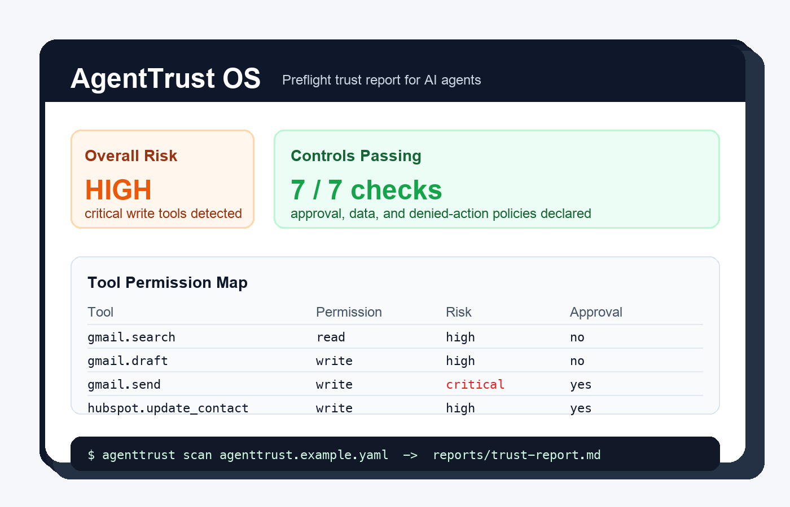

Declare the agent
Use `agenttrust.yaml` to list tools, sensitive fields, data sources, approval rules, and blocked patterns.
Open-source agent safety tooling
AgentTrust OS scans an agent manifest, maps tools and permissions, checks human approval rules, and generates a trust report before an AI agent touches real business systems.
PYTHONPATH=src python3 -m agenttrust scan agenttrust.example.yaml

How it works
Use `agenttrust.yaml` to list tools, sensitive fields, data sources, approval rules, and blocked patterns.
The CLI checks risky write tools, critical approvals, sensitive data declarations, and denied-action logging.
Generate a Markdown trust report that builders, clients, and reviewers can inspect without a cloud account.
Why it matters
When an agent can send emails, update CRM records, read customer notes, or trigger automations, the hard question becomes: should this agent be allowed to act?
AgentTrust OS starts with a simple local workflow so teams can review capabilities, approvals, and sensitive data exposure before a workflow reaches production.
Use cases
Show clients what an automation can access, what requires approval, and where risk remains.
Compare agent versions and keep a plain-English review artifact for internal launches.
Start reviewing prompt-injection, data access, and tool misuse risks before integrations expand.
Roadmap
Try it locally